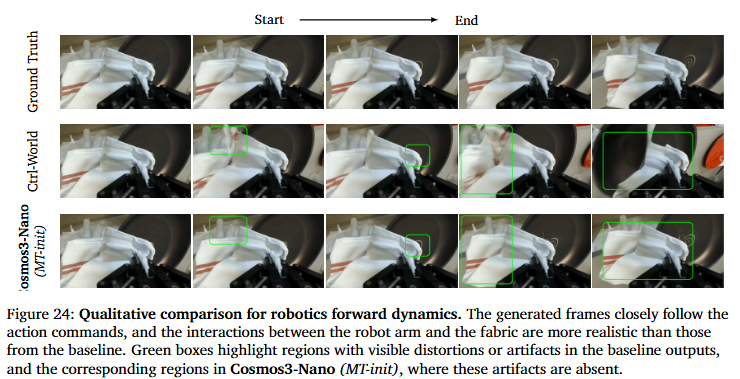
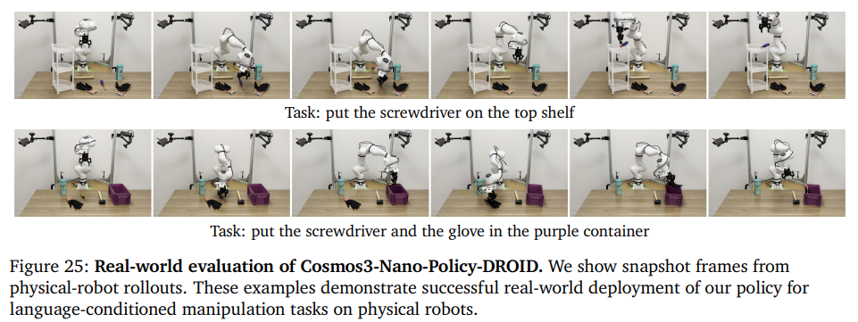
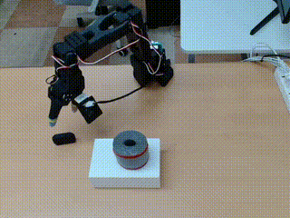
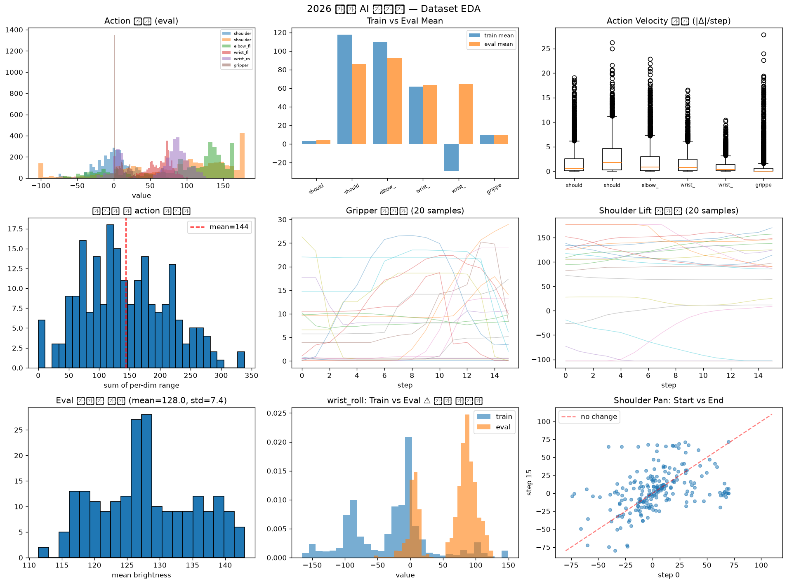
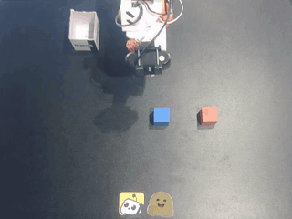
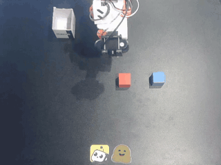
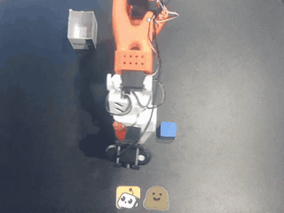
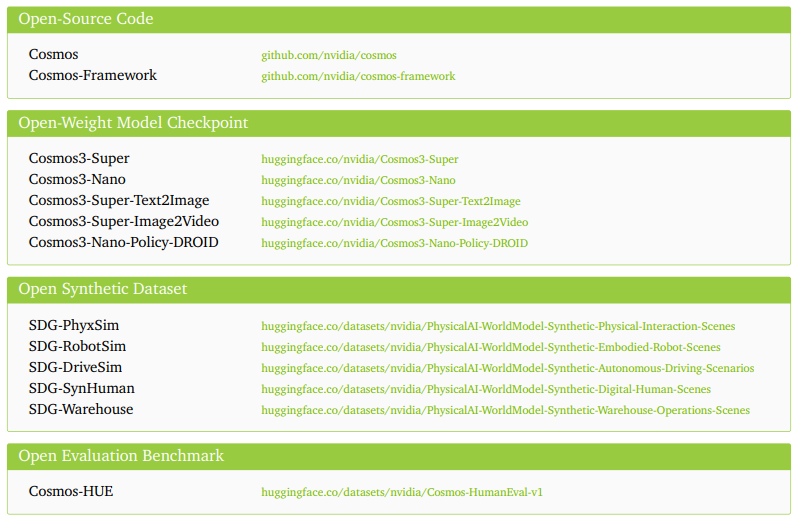

Paper Review
2026 · 08 · 21
Cosmos 3 NVIDIA · Cosmos Team
Aditi, Niket Agarwal, Arslan Ali, Jon Allen, Martin Antolini, Adeline Aubame, Alisson Azzolini, Junjie Bai, Maciej Bala, Yogesh Balaji, Josh Bapst, Aarti Basant, Mukesh Beladiya, Mohammad Qazim Bhat, Zaid Pervaiz Bhat, Dan Blick, Vanni Brighella, Han Cai, Tiffany Cai, Eric Cameracci, Jiaxin Cao, Yulong Cao, Mark Carlson, Carlos Casanova, Ting-Yun Chang, Yan Chang, Yu-Wei Chao, Prithvijit Chattopadhyay, Roshan Chaudhari, Chieh-Yun Chen, Junyu Chen, Ke Chen, Qizhi Chen, Wenkai Chen, Xiaotong Chen, Yu Chen, An-Chieh Cheng, Click Cheng, Xiu Chia, Jeana Choi, Chaeyeon Chung, Wenyan Cong, Yin Cui, Magdalena Dadela, Nalin Dadhich, Wenliang Dai, Joyjit Daw, Alperen Degirmenci, Rodrigo Vieira Del Monte, Robert Denomme, Sameer Dharur, Marco Di Lucca, Ke Ding, Wenhao Ding, Yifan Ding, Yuzhu Dong, Nicole Drumheller, Yilun Du, Aigul Dzhumamuratova, Aleksandr Efitorov, Hamid Eghbalzadeh, Naomi Eigbe, Imad El Hanafi, Hassan Eslami, Benedikt Falk, Jiaojiao Fan, Jim Fan, Amol Fasale, Sergiy Fefilatyev, Liang Feng, Francesco Ferroni, Sanja Fidler, Xiao Fu, Vikram Fugro, Prashant Gaikwad, TJ Galda, Katelyn Gao, Yihuai Gao, Wenhang Ge, Sreyan Ghosh, Arushi Goel, Vivek Goel, Akash Gokul, Rama Govindaraju, Jinwei Gu, Miguel Guerrero, Elfie Guo, Aryaman Gupta, Siddharth Gururani, Hugo Hadfield, Song Han, Ankur Handa, Zekun Hao, Mohammad Harrim, Ali Hassani, Nathan Hayes-Roth, Yufan He, Chris Helvig, Cyrus Hogg , et al.
언어·이미지·비디오·오디오·행동 을 하나의 옴니모달 아키텍처에서 통합 처리하는 World Foundation Model.
Ch.1 배경 · Why WAM?
기존 패러다임
VLA · task 하나에 반복 demo · 확장하려면 다시 처음부터
"컵 집기" 를 학습시키려면 컵 집는 영상이 수백~수천 개 필요하다같은 팔로 "컵 놓기" 는 처음부터 다시 학습 — skill 하나가 다른 skill로 이어지지 않는다
1,000 가지 task를 하려면 1,000번 데이터 수집 · 1,000번 fine-tuning
VLM (보기) · Video Gen (상상) · VLA (움직이기)가 따로 학습 돼서 서로 대화하지 못한다실제 로봇으로 demo를 만드는 것 자체가 느리고 · 비싸고 · 위험하다
반복 Demo (수백~수천)
"컵 집기" demo × N
Dataset D_task
비디오 · action 페어
학습
VLA
Vision-Language-Action
policy π(a | v, ℓ)
추론
하나의 Task 실행
"컵 집기" 성공
다른 task · 다른 로봇 · 다른 환경 → demo부터 다시 수집 필요
Notion §소개 · Cosmos 3 §1 · WAM 등장 배경
Ch.1 배경 · The Solution
해답 — 세 모듈을 하나 로
2p의 문제점 → 세 모듈이 따로 학습돼 서로 대화하지 못함
VLM(보기) 만으로는 장면을 이해해도 어떤 행동을 할지 모른다 Video Gen(상상) 만으로는 미래를 예측해도 실제 행동으로 이어지지 않는다 VLA(움직이기) 만으로는 새 상황·새 로봇에 일반화하지 못한다 (2p ①~③)
VLM
인식과 추론
Vision-Language
Video Gen
환경 시뮬레이션
Video Generation
VLA
행동 실행
Vision-Language-Action
Cosmos 3
Omnimodal World Action Model
Notion §소개 · WAM 등장
Ch.3 WFM · WAM · 정의와 궤적
World Foundation Model → World Action Model
주변 환경의 변화를 예측하는 모델이 action 과 만나면 WAM
월드 = 주변 환경 (로봇이 상호작용하는 물리 공간)WFM = 현재 장면을 바탕으로 앞으로 세계가 어떻게 변할지 를 예측하는 모델여기에 "다음 행동의 결과" 까지 예측하면 — WAM (World Action Model)
영상과 행동을 함께 예측 · action at 가 vt−1 → vt 로의 변화를 만듦
현재 · 주변 환경
vt
WFM
World Foundation Model
세계 동역학 · action prior
p(vt+1:t+H , at:t+H | vt , ℓ)
앞으로의 세계 · 예측
vt+1
vt+2
vt+H
⋯
+ at:t+H (행동 시퀀스)
↓ 이 예측을 시간 축으로 펼치면 WAM 궤적
v₀
현재
v₁
v₂
v₃
⋯
a₁
a₂
a₃
영상 토큰 vₜ (주변 환경)
행동 토큰 aₜ · 상태 전이
이 궤적을 다루는 3가지 방식 → Forward Dynamics · Inverse Dynamics · Policy
Notion §WFM · WAM 컨셉
Ch.3 WFM · WAM · Three Modes
세 가지 WAM 모드
clean = 조건 · noisy (˜) = 예측 대상 · 같은 네트워크 · 같은 loss
① Forward Dynamics
행동 → 미래 영상
"이 행동을 하면 세계가 어떻게 변하는가 ?"
Language
Image
Video
Audio
Action
Cosmos 3
AR
DM
Attn
Attn
Language
Image
Video
Audio
Action
pθ ( vt:t+H | v0:t−1 , at:t+H )
예시 · EE 이동 → 컵의 미래 위치 예측
before
예측
로봇 EE 오른쪽 이동 action chunk → 팔·주변 물체 변화 예측
② Inverse Dynamics
영상 변화 → 행동
"이런 변화가 있었다면 어떤 행동이 원인 ?"
Language
Image
Video
Audio
Action
Cosmos 3
AR
DM
Attn
Attn
Language
Image
Video
Audio
Action
pθ ( at | vt−1 , vt )
예시 · TOP-VIEW · 어느 경로였는가?
v_{t−1}
v_t
추론된 정답 경로 ât
차량 두 프레임 → 이동 방향·회전량 / 카메라 pose 추정
③ Policy · Joint Prediction
행동 + 미래 영상 동시 생성
"이 행동을 수행하면 이런 미래 영상 이 나타날 것"
Language
Image
Video
Audio
Action
Cosmos 3
AR
DM
Attn
Attn
Language
Image
Video
Audio
Action
pθ ( at:t+H , vt+1:t+H | v0:t , ℓ )
예시 · "컵을 선반에" · action + 미래영상 joint
선반
v̂
동시 해결 · ① 어떤 행동? ② 그 결과 세계 변화?vt−1 → (ãt , ṽt ) · joint video-action prediction
"컵을 집어 선반 위에 놓아라" ℓ → action + 미래 영상 동시 denoising
Cosmos 3의 핵심 — FD · ID · Policy를 서로 다른 모델로 만들지 않고 , 하나의 omnimodal sequence model 안에서 처리.
영상 · 언어 · 행동을 한 시퀀스로 학습하면 서로의 표현 · world dynamics prior 가 공유됨.
Notion §WAM 3 모드 · Cosmos 3 Fig. 4
Ch.4 아키텍처 · Mixture-of-Transformers
전체 구조 — MoT with dual pathway
S = [SAR , SDM ] · 5 modality → encoder → 하나의 시퀀스 → MoT → decoder
Language
Image / Video
Audio
Action
Tokenizer
ViT
(understanding)
VAE
(generation)
Audio VAE
Action Proj.
AR Subsequence
Language + ViT visual tokens
DM Subsequence
VAE + Audio + Action tokens (clean cond → noisy target)
Mixture-of-Transformers (MoT)
Reasoner pathway
Generator pathway
Reasoner Output
next-token logits + AR hidden states
Generator Output
velocity prediction (rectified-flow)
conditions
Text decoding
Iterative denoising
Language output
Image /
Video
Audio
Executable
action
AR hidden state → DM conditioning · 단방향
언어·이미지·비디오·오디오·액션을 각각 별도 모델에 넣지 않음 · embedding 후 하나의 시퀀스 로 이어붙임
S_AR
Language + ViT tokens
S_DM
clean cond
noisy target
S = [ S_AR , S_DM ]
ONE TRANSFORMER LAYER
Reasoner (AR)
LayerNorm · Attn proj · MLP
(AR tokens)
Generator (DM)
LayerNorm · Attn proj · MLP
(DM tokens)
각 pathway 독립 · LayerNorm · Attn proj · MLP · 기타 layer parameter
AR = next-token logits · hidden state로 DM 조건화
DM = velocity prediction → rectified-flow denoising
정보 흐름 · AR → DM 단방향 (역류 X)
shared architecture + separate AR/DM parameters + joint attention
Notion §4. 모델 · Cosmos 3 Fig. 5
Ch.5 학습 · Stage 1 · Pre-training
Stage 1 — Pre-training · 범용 생성 prior
Image · Video · Audio 사전학습 · Action 아직 비활성 · Reasoner frozen
Language
Image / Video
Audio
Action
아직 비활성
Tokenizer
ViT
VAE
Audio VAE
Action Proj.
AR Subsequence
Language + ViT tokens
DM Subsequence
VAE + Audio (Action 미포함)
MoT · Generator만 학습
Reasoner frozen (θ_AR)
Generator trainable · pulse
Image · Video · Audio Generation
T2I · T2V · I2V · V2V · T2(V+A) · I2(V+A) · V2(V+A)
image / video / audio → general multimodal generation ability
Action stream not yet introduced as a major training stream
이미지·비디오·오디오를 보며 세계의 시각적·청각적 패턴과 기본 시간 변화 학습
모델이 세상 자체를 압축된 형태로 이해 하는 단계
x̃ → x
noise 섞인 latent를 원본 데이터로 복원 · rectified-flow velocity prediction
📦
데이터 · Reasoner vs Generator Reasoner Pre-train ≈ 22.0M · SFT 2.2M (image-text · video-text · text)
Generator = Image · Video · Audio (범용)
💡 θAR = frozen · θDM = trainable · 사전학습된 VLM의 언어·시각 이해 보존
Notion §5. 학습 · Pre-training · Generator Curriculum
Ch.5 학습 · Stage 2 · Action Mid-training · Cosmos 3 핵심
Stage 2 — Action Mid-training · World-Action prior
기존 modality 유지 + Action · Control 추가 · FD/ID/Policy 3 모드 학습
Language
Image / Video
Audio
Action ✨
+ Control · edge / depth / segmentation / scenario map
Tokenizer
ViT
VAE
Audio VAE
Action Proj.
AR Subsequence
DM Subsequence + Action
v/a/action · clean cond → noisy target
MoT · Reasoner + Generator (공동)
Forward Dynamics
clean v+a → noisy v̂
Inverse Dynamics
clean v transition → noisy ã
Policy · Joint
noisy ã + noisy v̂
general generator + physical-world · action → world-action foundation model
Physical AI 데이터 (로봇 · 자율주행 · 카메라 모션 · egocentric) 추가
"그럴듯한 영상"에서 행동에 따라 세계가 변화하는 모델 로 확장
FD · p(vt+1 |vt ,at )t |vt ,vt+1 )t ,vt+1 |vt ,ℓ)
Action 25% · Video 32% · Transfer 20% · Image 10% · V+A 8% · Driving 5%
Egocentric · AV · Robotics · Camera Motion
💡 기존 시각·청각 유지 + action / control 추가 → 행동에 따른 세계 변화 학습
Notion §5. 학습 · Mid-training · Table 6
Ch.5 학습 · Stage 3 · Post-training · Specialization
Stage 3 — Post-training · Specialist 분화
Mid-trained base → task-specific specialist checkpoint · 아키텍처 유지
Cosmos 3 · Mid-trained Checkpoint
shared MoT backbone · same architecture
specialize
specialize
specialize
Cosmos3-Super-T2I
Text-to-Image specialist
← curated image-caption
Cosmos3-Super-I2V
Image-to-Video specialist
← curated video
Cosmos3-Nano-Policy-DROID
Robot Policy specialist
← DROID (76K traj · 350h)
Image
Video
Joint-position actions
Mid-trained Cosmos 3 → { T2I specialist, I2V specialist, Robot Policy specialist }
아키텍처는 그대로 · 데이터·output interface만 특화
중간 학습까지 마친 범용 모델을 특정 목적에 맞게 추가 학습
하나의 base → 여러 specialist checkpoint로 분화
pθ' (at:t+H | vt , ℓ, embodiment)
특정 embodiment에 맞춘 action space · task 최적화
T2I · curated image-caption
I2V · curated + synthetic video
DROID · 76K trajectories · 350h · 86 tasks · 564 scenes
💡 아키텍처 재설계 X · specialist ↔ base model 동일 architecture 공유
Notion §5. 학습 · Post-training · DROID
Ch.6 추론 · Inference · Iterative Flow Sampling
추론 — Condition → MoT → Sampling Loop → Output
학습 완료 후 · random noise + condition 에서 시작해 학습된 velocity field로 복원
Condition Input
Language · Image · Video
Audio · Action
task mode 결정
Token Packing
AR
+ DM clean cond
+ noisy target (random noise)
MoT Forward Pass
Reasoner + Generator
AR hidden → DM 조건화
→ velocity prediction
Sampling Loop · × N
rectified-flow · velocity 기반 반복 갱신
z_k
(noisy latent)
MoT
velocity u_θ
flow update
z_{k+1}
(cleaner)
iterate × N
Clean generated latent
(video · audio · action)
Modality decoders (VAE)
Video / Image
Audio
Executable action
Text decoding
LM head · sampling
Language
학습 · noise 추가된 target을 MoT가 복원 → loss → 파라미터 업데이트
추론 · 파라미터 고정 · random noise + condition에서 시작 → 학습된 velocity로 복원
♾️
Iterative Flow Sampling
xk+1 = xk + Δτ · uθ (xk , τ, c)
MoT가 매 step velocity 를 예측 → latent 갱신 → × N 반복 → clean latent
DM 출력은 clean image가 아니라 velocity prediction (rectified-flow)
Nano-Policy-DROID
입력 · 3-view visual + proprioception + language
출력 · 32 future joint-position actions · 15 Hz
4 diffusion steps · shift 5 · CFG 3 · video decoding 생략 (지연 감소)
Notion §3. 추론 · Iterative Flow Sampling · Policy Inference
Ch.7 논문 실험 · Overview · 5 Questions
논문이 던지는 5가지 질문
FD · Camera FD · ID · Policy · Consistency — 각 실험이 답하려는 것
Robotics Forward Dynamics
로봇의 현재 영상 + action 을 입력하면 미래 영상을 정확히 예측 할 수 있는가?
Camera Motion Forward Dynamics
카메라 이동 trajectory 를 조건으로 주면 그 움직임을 따르는 영상 을 생성할 수 있는가?
Inverse Dynamics
영상 변화 를 보고 그 변화를 발생시킨 action / trajectory를 추론 할 수 있는가?
Robot Policy
현재 관찰 + 언어 instruction으로 실제 로봇이 수행할 수 있는 action trajectory 를 만들 수 있는가?
Video-Action Consistency
생성한 action 과 미래 영상 이 서로 일관적인가?
Notion §4. 실험 · Overview
Ch.7 논문 실험 · 실험 1 · Robotics Forward Dynamics
행동을 주면 미래 영상 을 정확히 예측하는가?
DROID · 16-step end-effector action → 16 future frames · PSNR ↑
Ground Truth · Ctrl-World · Cosmos3-Nano (MT-init) 정성 비교

논문 Figure 24 · 로봇 팔·옷감 상호작용 · MT-init에서 왜곡·아티팩트가 사라짐
DROID 초기 프레임 + 16-step EE action 을 입력해 이후 16 프레임을 생성. 실제 미래 영상과의 PSNR 을 측정.
Ctrl-World 22.99 dB · Nano PT 23.24 dB · Nano MT 25.52 dB · Super MT 26.04 dB
Nano · PT → MT · +2.28 dB · Nano MT → Super MT · +0.52 dB
Action mid-training은 스케일 증가보다 4배 이상 큰 개선 . 작은 모델이라도 MT-init 이면 큰 모델 PT-only를 앞선다.
Robotics FD · PSNR ↑ (Table 18)
Ctrl-World
22.99 dB
Nano PT
23.24 dB
Nano MT
25.52 dB
Super MT
26.04 dB
Nano PT → Nano MT · +2.28 dB ≫ Nano MT → Super MT · +0.52 dB
Cosmos 3 §6 · Fig 24 (main) + Fig 21 (ref)
Ch.7 논문 실험 · 실험 2 · Camera Motion Forward Dynamics
카메라 이동 궤적 을 조건으로 그 움직임을 재현하는가?
생성 영상에서 추정한 trajectory vs 실제 · RRE · RTE · ATE ↓
Fig 21 · 여러 world model 정성 비교 (Cosmos3-Nano · LingbotWorld · HY-World 1.5)
Ground Truth 대비 · 카메라 궤적 조건 생성 결과의 정성 차이
카메라 이동 trajectory를 조건으로 영상을 생성한 뒤, 생성 영상에서 다시 trajectory를 추정. RRE (회전) · RTE (이동) · ATE (전체) 오차 비교.
Nano PT · 0.172° / 0.034 m / 1.61 m
Nano MT · 0.147° / 0.029 m / 1.24 m
Super MT · 0.142° / 0.026 m / 0.99 m (최저 오차)
Super PT (0.293°) 가 Nano MT (0.147°) 보다 두 배 나쁨. 카메라 pose 정확도는 파라미터 스케일이 아니라 mid-training 이 지배한다.
Table 18 · Camera Motion FD · 낮을수록 좋음
Model
RRE (°)
RTE (m)
ATE (m)
Super PT
0.293
0.036
1.82
Nano PT
0.172
0.034
1.61
Nano MT
0.147
0.029
1.24
Super MT
0.142
0.026
0.99
Super PT 0.293° ≫ Nano MT 0.147° · 2× 격차 → mid-training이 스케일보다 우세
Cosmos 3 §6 · Fig 21 (main) + Table 18 (Camera Motion, SVG)
Ch.7 논문 실험 · 실험 3 · Inverse Dynamics
영상 변화를 보고 원인 행동 을 역추론할 수 있는가?
자율주행 영상 → ego-trajectory (회전 · 이동) 예측
Fig 22 · Autonomous Vehicle Inverse Dynamics · ego-trajectory 시각화
Input Video · Cosmos3-Nano (MT-init) · DepthAnything3 · VGGT · 빨간선=GT
자율주행 영상 시퀀스 vt:t+T 를 입력해 그 사이 발생한 ego-trajectory ât:t+T 를 예측. 회전(RRE) · 이동(RTE) · 전체(ATE) 오차 측정.
Nano MT · RRE 0.211° · RTE 0.014 m · ATE 0.98 m
Super MT · RRE 0.232° · RTE 0.014 m · ATE 0.90 m
두 모델 모두 PT-init 대비 개선
Super가 회전 오차는 더 나쁘고 전체 trajectory는 더 좋음 . Inverse는 스케일 단순 우위 아님 · 회전 vs 이동 tradeoff 존재.
Table 18 · Autonomous Vehicle (ID) · 낮을수록 좋음
Model
RRE (°)
RTE (m)
ATE (m)
Nano MT
0.211
0.014
0.98
Super MT
0.232
0.014
0.90
Nano PT
0.249
0.017
1.20
Super PT
0.284
0.018
1.32
DepthAnything3
0.312
0.354
9.29
VGGT
0.596
0.768
23.46
Nano MT · Super MT 가 DepthAnything3·VGGT baseline보다 ATE 10~25× 낮음
Cosmos 3 §6 · Fig 22 (main) + Table 18 (AV ID, SVG)
Ch.7 논문 실험 · 실험 4 · Robot Policy · Closed-loop · Real-world
실제 로봇에서 수행 가능한 policy 인가?
Nano-Policy-DROID · (It , st , ℓ) → 32-step joint-position action · 실물 로봇 rollout 포함
실물 로봇 rollout · 두 태스크 성공 시연

논문 Figure 25 · "put the screwdriver on the top shelf" · "put the screwdriver and the glove in the purple container"
3-view multi-view observation + proprioception + 언어 지시 를 입력해 32개의 미래 absolute joint-position action을 예측. RoboLab · RoboArena · MolmoSpaces에서 평가.
RoboLab Specific · Nano-Policy-DROID 39.7% · π0.5 28.1% · DreamZero 23.9%
RoboArena · 논문 시점 1위 · long-horizon 포함
MolmoSpaces · All Combined 39.0% oracle
Nano (16B)가 π0.5 대비 +11.6 %p . Fig 25처럼 실물 로봇에서 언어 조건 조작이 실제로 성공 . 통합 WFM + policy 아키텍처 가 3개 벤치마크 모두 SOTA.
Table 19 · RoboLab-120 Overall 성공률 (%) · 높을수록 좋음
Model
Vague
Default
Specific
Nano-Policy-DROID
20.6
36.8
39.7
Nano (PT-init)
16.7
28.1
30.2
π₀.₅
15.2
29.7
28.1
DreamZero
14.9
25.7
23.9
π₀-FAST
9.2
15.5
14.9
GR00T N1.6
5.4
7.2
6.3
Nano-Policy-DROID 가 π₀.₅ 대비 Specific +11.6%p · 3 컬럼 모두 SOTA
Cosmos 3 §6 · Fig 25 (main) + Table 19 (ref)
Ch.7 논문 실험 · 실험 5 · Video-Action Consistency
생성한 행동과 미래 영상 이 서로 일관적인가?
joint prediction 검증 · action을 simulator에서 실행 → 예측 영상 vs sim 영상 PSNR
Video-Action Consistency · 정성 · Left third-person vs Wrist view
예측 영상 vs simulator rollout · view별 정합 정도 비교
모델이 action chunk + 미래 영상 을 joint 예측 → 예측 action을 simulator에서 실행 → 그 rollout 영상과 예측 영상을 PSNR 로 비교.
Left third-person view · 23.19 dB
Wrist view · 17.33 dB
Wrist가 third-person보다 −5.86 dB 낮음
Wrist는 카메라가 EE와 함께 움직여 새 영역이 계속 노출 되어 예측이 어려움. joint 일관성은 카메라 관점에 의존 한다.
Video-Action Consistency · PSNR ↑ · view별 비교
Left 3rd-person
23.19 dB
Wrist
17.33 dB
Wrist − Left 3rd-person · −5.86 dB · view에 따라 재현 난이도 큰 격차
Cosmos 3 §6 · Video-Action Consistency (PSNR SVG)
Ch.8 실전 적용 · 2026 INHA AI Challenge · Dacon 236736 · Independent Entry
챌린지 Task · Action-Conditioned Video Generation = WAM
Train (영상+action) 으로 학습 · Eval (첫 프레임+action) 로 미래 16-frame 롤아웃 생성 · 3-metric 채점
TASK · World-Action Model (WAM · Forward Dynamics)
SO-100 조작 클립 · train 5,481 · eval 216 . 목적은 action이 주어졌을 때 그에 부합하는 미래 영상을 생성 하는 것.
pred / GT 비디오로부터 DINOv2 · R3D · action extractor 3축 합산 · lower better .
0.3·(1−DINO_cos) + 0.3·(1−R3D_cos) + 0.4·Action_MAE
Train (5,481)
Video (16 frame)
…
Action seq (15)
a₀ a₁ … a₁₄
→ 지도학습 신호로 (video, action) 페어 사용
Eval (216)
First frame
f₀
(f₁…f₁₅ 없음)
? ? ? …
Action seq (15)
a₀ a₁ … a₁₄
→ 첫 프레임+action으로 16-frame rollout 생성
Training Constraints
GPU · 1 × RTX PRO 6000 (96 GB)
학습 wall-time · ≤ 4 일
실측 · 슬럼 p6000 = Blackwell sm_120
Inference Constraints
GPU · 1 × RTX PRO 6000 (96 GB)
216-sample eval · ≤ 1 시간
sample 당 · < 16.6 s 예산
Output · Cosmos-Predict3-Nano

sample 164 · MAE 0.144 · 좌우 이동 + 물체 집기 동시 · 16-frame · 6 fps
Portfolio · Project 03 · Challenge Context
Ch.8 실전 적용 · 자체 EDA · 방향성 · 방법론 매핑
EDA에서 발견 한 것 · 방향성 → 방법론
9-panel EDA · 절대 joint 편중 · gripper drift · 세 방향성 각각을 방법론으로 연결
[ 과정 · EDA → 방향성 ]
발견 · 절대 joint 값 편중
joint 값 범위·부호가 eval에서 편중 · 프리트레인 분포와 스케일 불일치
발견 · 후반 frame drift
gripper 궤적이 후반부에 발산 · 첫 프레임 anchor 필요성 시사
발견 · injection 표현력 부족
고정 projection으로는 SO-100 특성 흡수 어려움 · 학습 가능한 경로 필요
→ 세 방향성 · 각각 방법론으로 연결
① EE-Delta · 절대 joint → EE delta + gripper[0,1] 재설계
② ANCHORED_soft · 첫 프레임 anchor 후처리로 drift 억제
③ Action Injection Module · 학습 가능한 projection 추가
자체 EDA · 9-panel

joint 분포 · velocity · Δaction · train↔eval 편차 · gripper 궤적 · 밝기 분포
absolute joint (6-D)
EE delta + gripper[0,1]
프리트레인 분포와 스케일 정합 · absolute → delta
v5_base
⊕ 50:50
첫 프레임 anchor rollout
후반 drift 억제 · R3D 손실 없이 overlap ↑
SO-100 6-D
action_proj (학습)
MoT
action_proj_in/out + modality embed · Action MAE −43.2%
Portfolio · Project 03 · Self-EDA → Method Mapping
Ch.8 실전 적용 · 최종 전략 · 6개 축
최종 전략 · 6개 축 · 가설 → 결과
학습 3축 (Injection · LoRA · EE-Δ) + 후처리 2축 (ANCHORED · B4) + 인프라 1축 (Blackwell)
[ 과정 · 최종 전략 ]
Action Injection Module
action_proj_in/out + action-modality embed · → MAE −43.2% LoRA rank 32 · attn + MLP 광범위
add_q/k/v_proj · to_add_out + gate/up/down_proj · → MAE −8.6% EE-Delta 재설계
EE delta + gripper [0,1] · → absolute 0.300 → 0.2454 ANCHORED_soft · 후처리 앙상블
v5_base + ANCHORED (50:50) · → 안전본 0.24524 B4 sweep + ckpt selection
step별 sweep · step 6000 pick · → 도전본 0.2407 Blackwell env · torch 2.15 nightly cu130
diffusion 11 s → 1.5 s (7× 가속)
🏗️
최종 파이프라인 · Cosmos-Predict3-Nano
Input
첫 프레임 + 15-step joint action
Cosmos-Predict3-Nano
공개 checkpoint · frozen backbone
Recipe · 3축 결합
Action
Injection
−43.2%
LoRA
rank 32
attn+MLP
EE-Δ
재설계
gripper[0,1]
Post + Selection
ANCHORED_soft (50:50) + B4 sweep step 6000
16-frame rollout
LB 0.2407 🏆 · 안전본 0.24524
Portfolio · Project 03 · Final Strategy
Ch.9 정리 · R · Result · Base → Total
결과 · Ablation · 회귀 검증
5행 실측 · 회귀 R² 0.993 · MAE ↔ LB 상관 검증
0.2407
Final LB (도전본) · B4 s6000
0.24524
Safety (안전본) · v5_base + ANCHORED
−43.2%
Action MAE · Injection Module
+0.820
MAE ↔ LB 상관 (r) · 초기 phase
📊
Ablation · Base → Total (실측 리더보드)
# Method LB Δ vs base 비고
1 v1 baseline (Cosmos3-Nano · no train) 0.268 — 초기 학습 없이 제출 2 + absolute joint 40k (실패) 0.300 +0.032 action 표현 mismatch 확인 3 + EE-Δ · LoRA rank 32 · Action Injection 0.2454 −0.023 학습 축 최고 (재현 0.24540) 4 + ANCHORED_soft (안전본) 0.24524 −0.023 후처리 축 최고 5 + B4 sweep step 6000 (도전본 · 최종) 🏆 0.2407 −0.027 최종 최고 성능
Portfolio · Project 03 · Result (Ablation + Regression)
Ch.9 정리 · Good case rollout · 실행 환경
Good Case Rollout · 실행 환경 · Model · Data
216 sample per-sample MAE 랭킹 · 6 fps 재생 · 재현 환경
sample 085 · MAE 0.332

sample 086 · MAE 0.357

sample 052 · MAE 0.366

Ubuntu 22.04 · Slurm
inha2026 · PyTorch 2.6
inha2026_bw · torch 2.15 nightly cu130
Cosmos-Predict3-Nano
Diffusers 0.39.0 · PEFT 0.20.0
LoRA rank 32 (attn + MLP)
SO-100 로봇 15-frame 롤아웃
Dacon 236736
train/eval action 분포 편차 EDA 완료
Portfolio · Project 03 · Good rollout + Environment
Ch.9 정리 · Conclusion ① · Paper vs Experience · 재현된 것과 재현 못한 것
논문 vs 실측 · 어디까지 재현 되고 어디서 갈라졌나
Cosmos 3 논문이 이식성을 어떻게 다뤘고, SO-100 실측이 왜 완전 재현에 이르지 못했는지
CORE MESSAGE
논문은 "통합 아키텍처의 이식성" 을 주장했지만,
실전 재현은 Post-training 레시피 · domain slot 초기화 · action 정규화 가 논문 밖 에 있었다.
→ 논문이 준 것은 이식성의 토대(architecture) · 논문이 주지 않은 것은 플러그-앤-플레이 레시피
요소
논문 주장
SO-100 실측
갭
Architecture 재사용
MoT 동일 · 3-modality 통합
동일 backbone frozen 사용 가능
✓
Mid-training 이점
MT-init > PT-init · +2.28 dB
방향성 재현 (Injection 후 MAE −43.2%)
✓
Post-training 레시피 논문에 없음 · GitHub 문서 부재
자체 curriculum 재설계 필요✗
Domain slot 초기화 32-slot 중 어느 게 학습됐는지 미명시
SO-100용 slot = zero init 실측
✗
Action 정규화 "dataset stats 기반" 만 명시
SO-100 절대 joint = Bridge 대비 6× 스케일
✗
Portfolio · Project 03 · Paper Claims vs SO-100 Reproduction Gap
Ch.9 정리 · Conclusion ② · 근본적 한계 · 실험 로그로 도출
근본적 한계 · 방법이 아니라 구조가 만든 상한
시간·자원 부족이 아니라, 문제·데이터·모델·채점기 자체가 만든 네 개의 상한선
모델의 Action MAE 0.389 , 첫 프레임을 그대로 복사한 baseline이 0.398 . 거의 차이 없음 .
움직임이 큰 sample일수록 생성이 못 따라가고, 모델이 사실상 "가만히 있는 답"에 수렴 했다는 뜻.
R3D · DINOv2는 학습된 그대로 얼려서 쓰도록 대회가 강제.
점수는 그 feature 공간 안에서만 매겨지므로, 실제 화질·동작을 개선해도 숫자에 잘 안 반영 됨.
Cosmos backbone은 WidowX · Bridge · DROID 데이터로 미리 학습된 상태.
SO-100은 영상도 action도 모델이 처음 보는 분포 . 40k step 파인튜닝으론 이 근본 격차를 지우지 못함.
사진 한 장 + action 시퀀스 만으로 미래 16-frame을 그려야 함.
초반 프레임에선 생성이 정지영상보다도 나쁘게 나오는 현상이 반복됨. image-to-video 문제 자체의 태생적 한계 .
정리 · 시도한 6개 도전 트랙(Track A~E · Robot-Factored WM)이 모두 이 네 상한선에 막혔음 . verify 0.245는 돌파가 아니라 방어 .
Portfolio · Project 03 · Fundamental Limits from Experiment Log
Ch.9 정리 · Conclusion ③ · Forward Dynamics · 계획·평가·행동 선택의 기반
Forward Dynamics의 실전 의의 · 실행 전에 결과를 보는 능력
"로봇이 앞으로 무엇을 할지 결정하고, 실행 전에 결과를 평가한다" — 이 관점에서 FD가 왜 직접적으로 중요한가
CORE MESSAGE
Forward Dynamics는 로봇이 "실행 전에 결과를 미리 보는 능력" 이다.
후보 행동을 시뮬레이션으로 비교 하고, 그중 목표에 가장 가까운 궤적을 선택 할 수 있게 해준다.
→ FD는 Planning의 모델 기반(model-based) 기반 · 이번 챌린지의 forward dynamics 모델은 그 첫 단추.
후보 action을 실제 실행하기 전에 미래 영상으로 미리 예측.
→ 위험한 시도·실물 파손 없이 reward·안전·성공 여부를 사전 판정 가능.
여러 action 후보 각각의 rollout을 생성해 결과를 병렬 비교 .
→ 목표(gripper 도달·물체 잡기 등)와 가장 잘 맞는 궤적을 골라 실행 .
🧭
③ Model-based Planning 기반
FD 모델은 MPC · Cross-Entropy Method · MCTS 등 계획 기법 의 심장.
→ real-world rollout 없이 상상 롤아웃으로 policy 후보를 sweep . 학습·평가·배포 비용을 크게 절감.
연결 · 이번 챌린지의 Cosmos-Predict3-Nano forward dynamics 모델은 ①·②·③ 파이프라인의 첫 조각 . 채점 순위가 아니라 "planning에 쓸 수 있는 forward model을 확보했다" 가 진짜 성과.
Portfolio · Project 03 · Forward Dynamics as Planning Backbone
Cosmos 3-Nano · Weekly Paper Review · HDC Labs · AI Lab
감사합니다Q & A
발표자 · 조윤재 · devilishvoice@inha.eduhashbraun.github.io/projects/project-03.html
Appendix · Open Source
Cosmos 3는 오픈소스 로 공개돼 있다
코드 · 다양한 스케일 checkpoint · 데이터셋 · benchmark
Cosmos 3 Family · Open Source

코드 · 모델 · 데이터셋 · 벤치마크 공개
Omnimodal World Foundation Model
Physical AI · 2026 최신
발표 대상 → Cosmos 3-Nano
코드 · 다양한 스케일 checkpoint
데이터셋 + benchmark 공개
Notion §Cosmos 3 소개
Appendix · Model Family
모델 스펙 — Nano · Edge · Super
스케일과 backbone
4B
16B
64B
Edge · 4B
2B × 2 tower
Nano · 16B
8B × 2 tower
Qwen3-VL-8B
◀ 발표 대상
Super · 64B
32B × 2 tower
Qwen3-VL-32B
Nano backbone = Qwen3-VL-8B · 36 layer · hidden 4096 · 32 heads
Notion §모델 스펙 · Cosmos 3 §2.5
Appendix · Two-way Flat Attention (Fig. 14)
시스템 최적화 — throughput +22%
복잡 mask 대신 두 번의 variable-length SDPA 로 분리 · Q&A 참조용
Fig. 14 · Two-way Flat Attention
(a) Reasoner block-diagonal causal · (b) Generator interleaved [R,G] KV
causal varlen SDPA 1회
block-diagonal · 샘플 간 격리
bidirectional varlen SDPA 1회
각 sample의 [R,G] 만 참조
end-to-end training +22% throughput
주의 · 학습 recipe (Pre/Mid/Post) 아님 · kernel-level 시스템 최적화 . 모든 stage에서 동일 적용
Notion §Two-way Flat Attention · Fig. 14